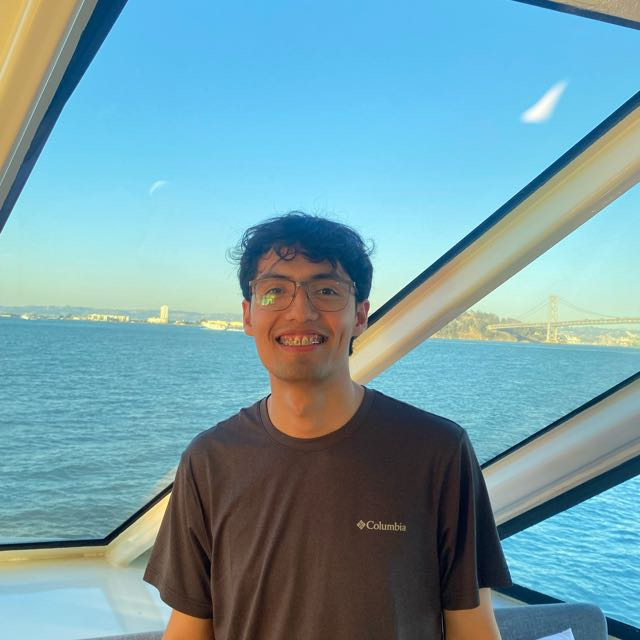

2020 – 2021
- Took an introductory Python course
- Started a Data Science specialization
- Became an AWS Certified Cloud Practitioner

Data engineer & software developer
I build data infrastructure, pipelines, and agentic workflows with an engineering mindset. I obsess over the details and stay eager to embrace what’s next.

Connecting the dots.
2020 – 2021
2022

2023
Cut the Weekly Business Review metric update from about four hours to 30 minutes by restructuring dependencies and moving an Airflow DAG to a larger warehouse.
Automated daily Prime data processing for Data Science models reaching about one million users.

2024

2025
Standardized demand matrix submissions from 16 law firms with Excel validation and Python checks, achieving 100% data accuracy.
Built the division’s first Power App for debtor visit reports, with Power Automate alerts tracking more than 34 monthly visits across five executives.

Jan – Mar 2026
Migrated more than 10 data pipelines from AWS Lambda to AWS Glue ETL powered by Spark, improving scalability and execution time with automated schema discovery.
Automated CI/CD for three data science applications using GitHub Actions and Terraform: speech analytics for bot conversations, speech analytics for AWS Connect calls, and classification of outbound campaign feedback.

Apr – May 2026

A few things I’ve shipped, built with taste, a little sweetness, and coffee ☕.
Mibanco por
WhatsApp

Building data infrastructure for a neobank with 2 million cumulative conversations.
60K+ users

Gym, three times a week
Eating healthy food

Hackathons, meetups, and events with people who love to build.
Agentic engineering
AWS Nanodegree at Udacity
Probability for AI
Stanford Code in Place program
Master’s in Data Science
Universidad Nacional de Ingeniería
San Francisco
Tech Week